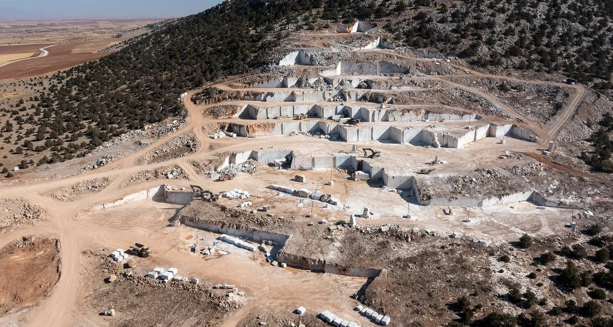
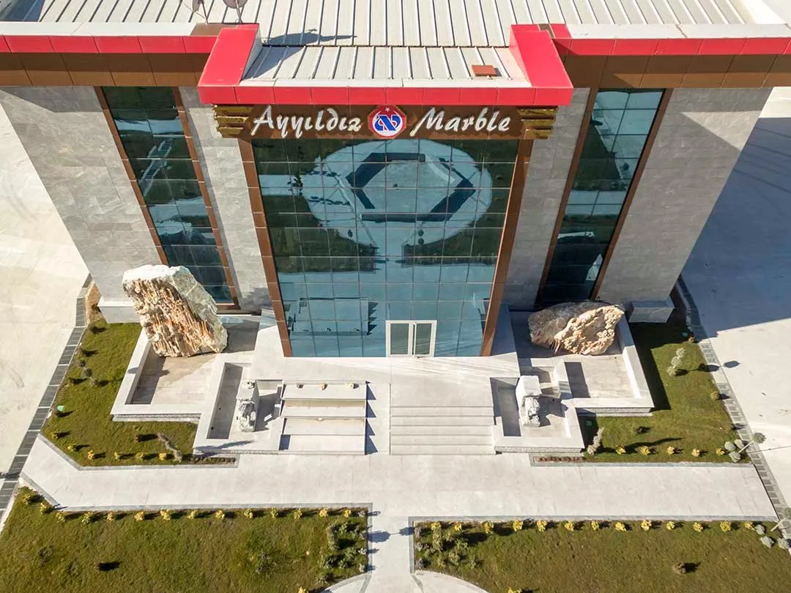

Since 1987 we have quarried, cut and finished our own grey marble in İscehisar, Afyonkarahisar — and shipped it to more than a hundred companies worldwide.
Our signature grey with fine white veining — one of the largest grey marble reserves in Türkiye, quarried by us since 2008.
Deep black with sharp white lightning veins. A statement stone for feature walls, bathrooms and furniture.
Rare, exotic stones selected block by block for hotels, villas and one-off interiors.
Basketweave, herringbone, hexagon and brick patterns, cut from our own marble on the same line.
Opened in 2008 on a 250-hectare licensed area, it is one of the biggest grey quarries in Türkiye. Blocks leave the bench for our own factory down the road — or straight to buyers in China, India and Taiwan.


A fully automatic, integrated plant on 32,000 m² of open yard. Our latest investment doubled slab output — from 30,000 to 60,000 m² per month.
Kansas Grey and Rising Star on show for North American architects and distributors.
Our block business in Asia, face to face with the world's largest stone buyers.
At home in Türkiye's marble capital, with domestic and international partners.
Tell us the stone, thickness and quantity. We reply with stock photos, samples and a price — usually the same day.